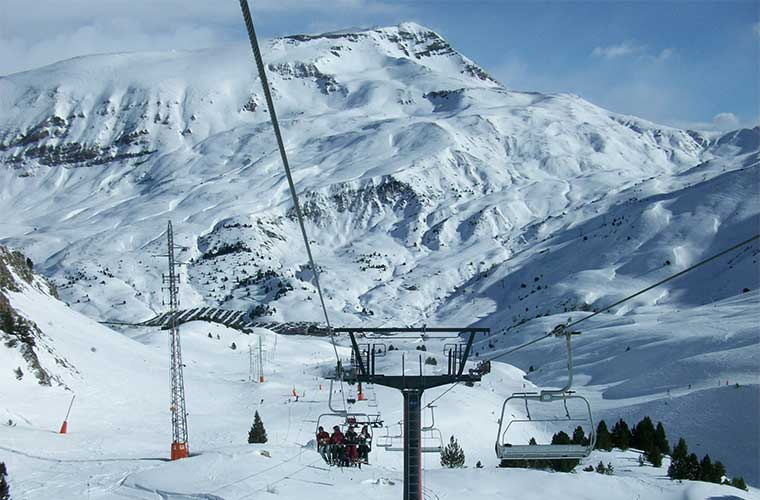

Cerler
Cerler es una de las estaciones de esquí más emblemáticas de los Pirineos, situada en el valle de Benasque, en Aragón. Con más de 77 km de pistas distribuidos en una gran variedad de terrenos, Cerler ofrece una experiencia única tanto para esquiadores principiantes como avanzados, destacándose por sus paisajes montañosos y su entorno natural inigualable.
La estación es conocida por tener algunos de los descensos más largos de los Pirineos, siendo ideal para quienes buscan una experiencia de esquí desafiante y emocionante. Además, Cerler ha sido galardonada varias veces como una de las mejores estaciones de España gracias a su calidad de pistas y la dedicación en el cuidado de las instalaciones.
En Cerler, los visitantes también pueden disfrutar de una variada oferta de actividades, como snowparks, paseos en raquetas de nieve, y opciones gastronómicas en acogedores refugios de montaña. En verano, la estación se convierte en un lugar ideal para practicar senderismo, ciclismo de montaña y explorar el espectacular paisaje pirenaico, lo que convierte a Cerler en un destino perfecto durante todo el año.
Aramón Cerler
22449 Benasque, Huesca